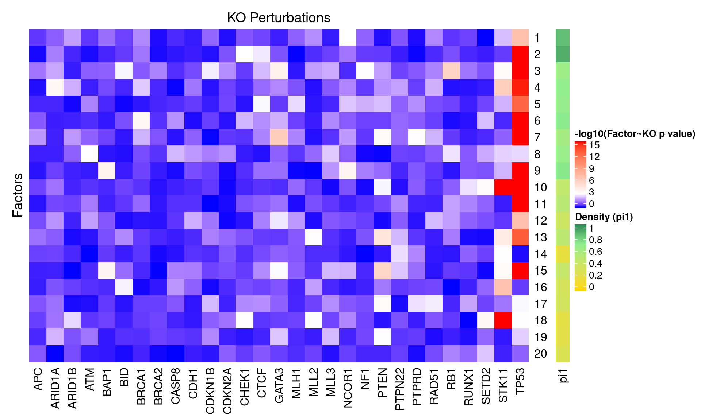
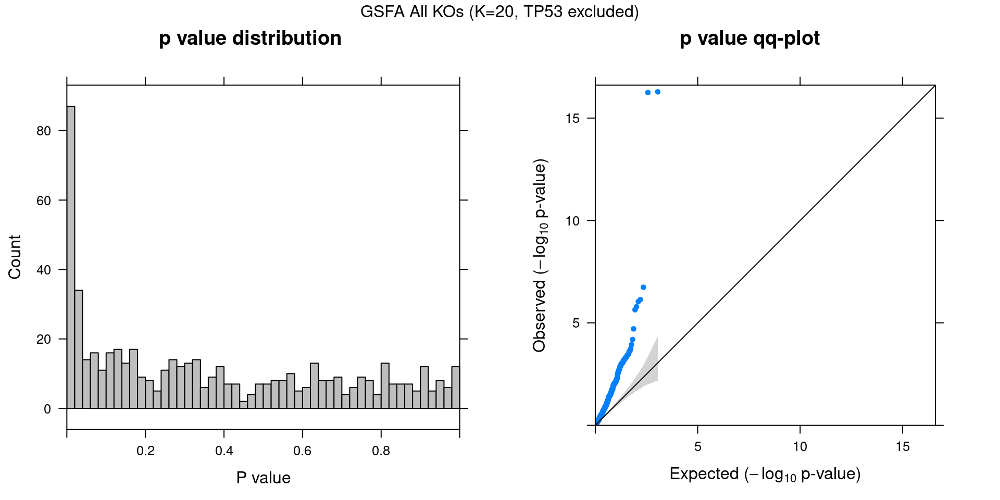
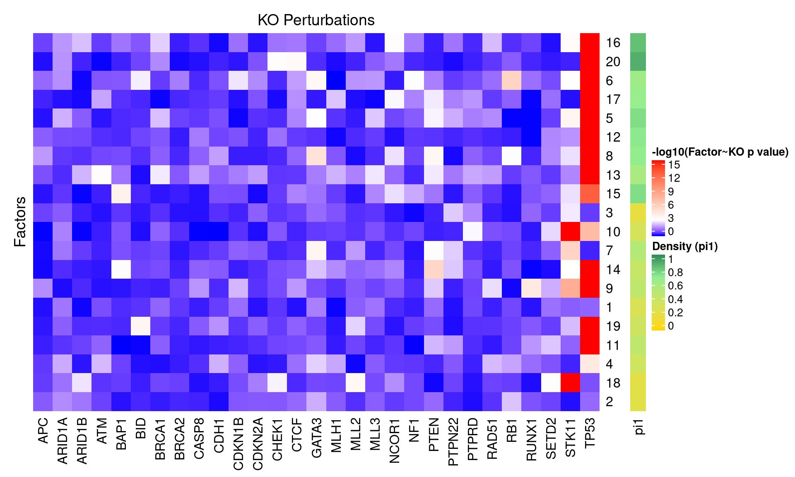
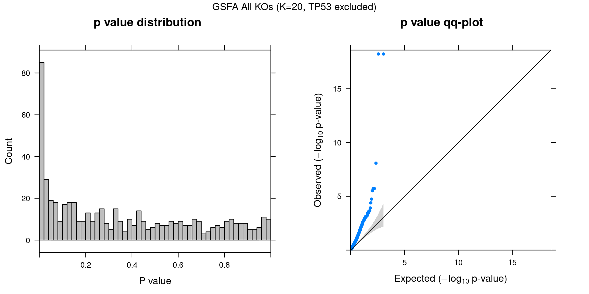
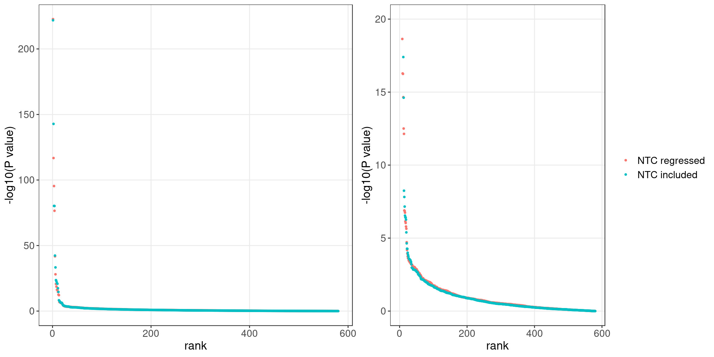

CROP-seq data are from this paper: On the design of CRISPR-based single cell molecular screens, GEO accession: GSE108699.
Perturbations:
Knock-outs of 29 tumor-suppressor genes (TP53, …), 1 non-targeting control.
Cells:
MCF10A cells (normal human breast epithelial cells) with exposure to a DNA damaging agent, doxorubicin.
Only cells with gRNA readout were kept, resulted in 5584 cells.
Genes:
Only genes detected in > 10% of cells were kept, resulted in 8046 genes.
Normalization:
Seurat “LogNormalize”: log(count per 10K + 1).
Library size was regressed out, so were the non-targeting control (NTC) condition per cell. The residuals were used as input.
Guided sparse factor analysis, with the \(G\) matrix being 30 types of KO conditions across cells.




For a pair of \(Z\) estimations from 2 inference methods, \(Z_1, Z_2\), we quantify the pairwise estimation difference as \(||Z_1Z_1^T - Z_2Z_2^T||_1/N^2\), where \(N\) is the number of rows (samples) in \(Z\).
Guided SVD vs Rand_01: 0.462
Guided SVD vs Rand_02: 0.391
Rand_01 vs Rand_02: 0.513
Guided SVD vs Unguided: 0.414

Genes w/ non-zero loadings vs all genes selected for factor analysis.
GO category: Biological Process.
GO terms that passed overrpresentation analysis fold change \(\geq\) 2 and q value \(<\) 0.05: